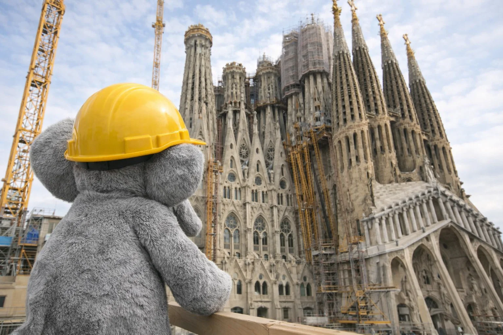

Elefant Fanta unterstützt den Bau der Sagrada Família
In einer überraschenden Wendung der Ereignisse hat ein Elefant namens Fanta begonnen, beim Bau der weltberühmten Sagrada Família in Barcelona zu helfen. Die Verantwortlichen des Projekts berichten, dass Fanta nicht nur für schwere Lasten eingesetzt wird, sondern auch für gute Stimmung auf der Baustelle sorgt.
„Es ist unglaublich, wie schnell sich Fanta eingearbeitet hat“, sagt ein Bauleiter. Der Elefant transportiert Materialien, hebt große Steinblöcke und zieht sogar Gerüste in Position. Touristen und Einheimische sind begeistert von dem ungewöhnlichen Helfer, der mittlerweile zu einer echten Attraktion geworden ist.
Die Bauarbeiten an der Sagrada Família dauern bereits seit über 140 Jahren. Mit Fantas Hilfe hoffen die Verantwortlichen, das Projekt schneller voranzubringen – und dabei ein Stück Geschichte mit einem Hauch von Tierliebe zu schreiben.